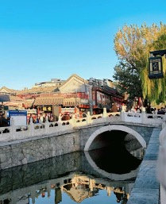

Un quartier historique et culturel au cœur de Pékin

Shichahai est un quartier historique très célèbre situé au centre de Beijing. Il est composé de trois lacs reliés entre eux : Qianhai, Houhai et Xihai.
Cette zone possède une histoire de plus de 700 ans. Pendant les dynasties Yuan, Ming et Qing, elle était un important centre commercial et culturel de la capitale. Autour des lacs se trouvent de nombreux hutongs et anciennes résidences traditionnelles, qui reflètent la culture et l’architecture anciennes de Beijing.
Aujourd’hui, Shichahai est connu pour ses paysages magnifiques et son atmosphère relaxante. En été, les visiteurs peuvent se promener autour des lacs, faire du bateau ou profiter de la vue paisible de l’eau et des saules.
En hiver, lorsque les lacs sont gelés, les habitants et les touristes aiment faire du patinage sur glace. Cette activité traditionnelle attire chaque année beaucoup de visiteurs et crée une ambiance très animée.
Shichahai est aussi un lieu important pour découvrir la vie culturelle de Beijing. Autour de Houhai, on trouve de nombreux bars, cafés et restaurants. La nuit, le quartier devient très vivant et populaire auprès des jeunes.
En même temps, on peut également y découvrir la culture traditionnelle chinoise, par exemple les hutongs, les anciennes maisons à cour carrée (siheyuan) et parfois des spectacles d’opéra ou de musique traditionnelle. Ainsi, Shichahai est un endroit où l’histoire et la vie moderne se rencontrent.